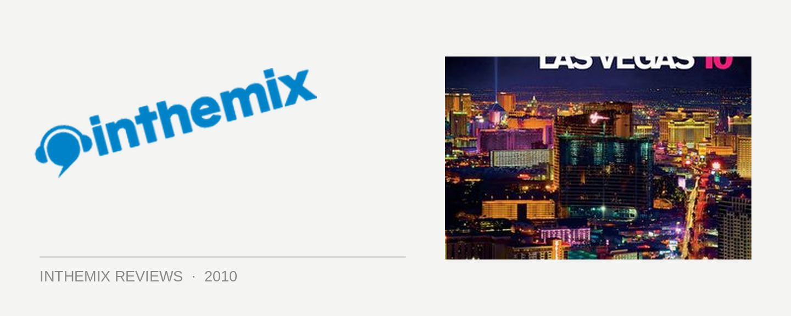

Various Artists - Las Vegas ‘10, mixed by Markus Schulz
Welcome to 2010 – and welcome to Markus Schulz’s annual musings on the underground edges of progressive trance. He’s heading towards two decades of working in dance, and can boast the DJing and production chops to match – but he’s truly stepped up to superstar status over the past few years. While there’s been mutterings he’s lost a touch of momentum in his DJ sets recently, that’s been tempered by the overwhelming success of his Dakota alias, which became a mascot of sorts for the tech trance sound following 2009’s Thoughts Become Feelings album. He’s traditionally kicked the off year with a compilation delving into the darker, more progressive side of his sound, and last year’s Toronto ‘09 ended up being flagged as one of the year’s best compilations in ITM’s Best Releases of 2009. Can he live up to his own legacy with Las Vegas ‘10?
Firing things up, Schulz comes out swinging with a vocal number from Torin Schmitt, with power percussion and those roaring basslines he loves so much, getting the mix off to a rousing start. It’s a surprisingly driving, but still fairly deep selection of progressive trance that’s about as fresh and upfront as it comes, and programmed with the skill you know he’s capable of. Both Markus’s new ‘afterhours’ mix of Chinook, as well as Rex Mundy’s new single Opera of the Northern Ocean keep the vibe pumping along at a pulsing pace, only pulling it back a touch with Mike Foyle’s Blossom. Arnej’s Ping Pong tears through a tech-heavy, glitched-out intro before smashing into a soaring breakdown, eventually building into something even more special – describing it as ‘epic’ would be putting it lightly. But of course, the mix is more than the sum of its individual excellent parts.
The vibe’s a lot more pumping vibe than last year’s comparatively moody and sombre Toronto ‘09, which probably has a lot to do with the choice of Las Vegas, and the glamorous Rain Nightclub, as its inspiration. It’s allegedly one of the most overblown clubs the world in terms of spectacle, and it’s the very same place Paul Oakenfold chose to settle down with for an extended residency. Thankfully though, Schulz isn’t subjecting us to the same kind of lazy, populist garbage that Oakie’s been pushing out the past few years – even if still, the standard doesn’t quite match the deep trance masterpiece we were treated to 12 months ago.
The second disc begins with a melancholic intro mix of Dakota’s Sin City (in the spirit of Las Vegas, of course), before Markus quickly makes his intentions clear with Skytech’s Comet. It’s stadium progressive trance, full of fist-pumping techno rhythms and massive basslines booming out at ‘ya. And just when you think he’s peaked it too hard, he pulls it back again with another superb tune from Arnej – before throwing your hands in the air again with Max Graham’s epic vocal anthem Sun In The Winter. Power progressive is the theme for the remainder of the mix: things get nasty with Mr Pit’s The Room is Not Big Enough, before he brings it to a devastating close with the electro-trance riffage of Shogun’s Connected.
Just like last year’s sterling Toronto ‘09, Schulz will again convince you that trance is in a pretty good place. The most flattering thing you could say about the genre that it’s now so rife with influences – progressive, techno, house, electro – that it’s long stopped being a novelty, and is now the welcome norm. But while it’s sporting more energy than last year’s restrained effort, ultimately it struggles to reach the same heights of that album; it’s just a little more forgettable. However, that doesn’t stop Las Vegas ‘10 from being a rock-solid mix, and we’ll look forward to welcoming Schulz back in the winter months.
Las Vegas ‘10 is out now through 405 Recordings and Stomp.